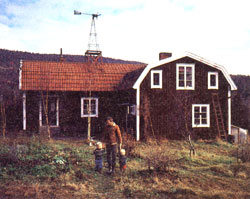
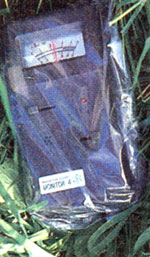
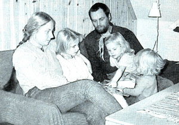
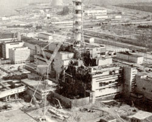
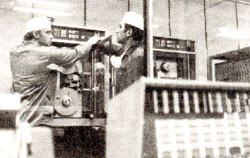

Life After Chernobyl
Twelve months ago, this Swedish family saw the cream of the country turn sour, including what caused the accident, what to expect from authorities, preparation, precautions and protection.
By Jeff and Eva Forssell
May/June 1987
Twelve months ago, a Swedish family saw the "Cream of the Country" turn sour.
If you're reacting this magazine, it's likely that you have two things in common with us. First, your desire for a healthy environment probably influenced where you chose to pour your foundations and plant your dreams. Second, there's almost certainly a nuclear reactor within 900 miles of your home. As we found out last year, that's only a two-day ride on the wind.
A Good Place to Hide?
Inspired partially by Helen and Scott Nearing (founders of the back-to-the-land movement and former columnists for Mother Earth News), we bought a small farm at the end of a gravel road in the north of Sweden. We thought we were relatively safe from a radiation disaster. Sweden has an ambitious nuclear power program (at present it supplies 50% of the nation's electricity), but the intense debate here over potential risk has probably led to our reactors being comparatively "safe."
Step by step we've built up a commercial biodynamic vegetable farm. Our three daughters have been raised on our own produce, and our local organic growers' association likes our interpretation of the Rex Oberhelman slogan: "Our food is 1,000 kilometers fresher." [Editor's Note: Rex was interviewed in MOTHER No. 98.] Over the winter of 1985-86, we finished the vital remodeling of our house. And while the snow was still on the ground, we started 80 (67-hole) flats of parsley as a special push to supplement our regular produce assortment for the season. Life was going well.
No Place to Hide!
We first heard about high radiation levels around a Swedish power plant on April 28, 1986. "Good thing we don't live there," we thought. In spite of being rather new, the Forsmark reactor seemed to be leaking. Authorities weren't able to figure out why a worker's clothing showed five to 10 times as much radiation as normal.
Later that day we Swedes (and the rest of the world) learned that the radioactivity was coming from the Ukraine. Invisible clouds of it blew north from Chernobyl over and around us. Everyone hoped that we'd experience just a short and marginal increase above normal background radiation levels. The Swedish Radiation Protection Institute (SSI) said that there was no danger but that, since rain was washing some fallout onto the ground, maybe we shouldn't let our children play in puddles.
It wasn't a very intense storm, but it did rain on and off for several days. Officials were busy measuring in an area just north of Stockholm (the capital itself got no fallout) that had received heavy doses because of the rain. According to the papers, that was the worst area. A couple of weeks later, the Geiger counters finally got out here to the boondocks, only to show that we'd been hit hard. Official warnings about not eating fresh greens-such as parsley-appeared in the media. Stores that had boasted a year ago about offering local produce now advertised that they sold no local produce.
Life turned into an evil joke. Parsley: 1,000 kilometers fresher? A natural life for our kids, far from the dangers of industry and nuclear power? Those who had once praised us for struggling to grow and sell organic food now suggested that we were socially irresponsible to even consider continuing.
Invisible Evil
We wrung our hands and vacillated between fury and despair, disbelief and tears. Out the window the sun shone on fields where new grass was coming up tender and green after a hard winter. Our chives had never looked better. Larks sang their joyous spring trills. The only way we could tell that this spring was different from any other was by turning on a Geiger counter.
B.C. (before Chernobyl), the meter would have ticked out a steady 10 microsievert per hour-inside or out, near the ground or a yard up. (A microsievert is a unit of absorbed radiation . . . 10 microsievert would be the approximate normal "background" level of our location.) But on May 15, when we got our meter, it showed 50 at our kitchen table and 100 to 200 outside. At one corner of the house (where the kids had made a little corral for plastic cows) the ground under a rainspout gave off a crackling 4,000 microsievert. Each hour of exposure to such levels could, depending on proximity and the type of radiation, be equal to 80 medical x-rays!
Remember how, when you were a child, the monster movies with giant ants and lizards weren't the ones that really gave you post-cinema creepies? It was the monsters that looked just like ordinary people that really got to you, right? Well, now we have that feeling about the whole of the natural world around us. It looks just the way it did before, but eating the strawberries might give our kids leukemia.
What to Expect From the Authorities
When something like Chernobyl happens, don't expect to be able to get hold of the peo ple in charge. The lines will be busy. When things get "organized" (after a while), there may be extra personnel to answer phones and provide a standard set of calming answers. For the nuclear industry, the handy thing about radiation is that unless you're very close to an accident, officials can honestly say, "There's no immediate danger." The symptoms of anything but very high doses of radiation show up only after a three- to 50year biological lottery has run its course. Unless you go skinny-dipping in the containment pool, you won't drop dead within a few weeks. Therefore, officials are likely to be more concerned about widespread panic. Only if you can convince them that you're levelheaded and have some understanding of the situation will they be forthcoming.
In several instances last spring, we got conflicting statements from different authorities. The farmers' health organization said that we should wear dust masks when harrowing or doing other jobs that might stir up fallout-covered dust. The SSI said that was ridiculous. The two organizations had a conference to discuss the matter and then brought forth a recommendation: It's always a good idea to wear a mask in dusty conditions.
A vital question that you probably won't be able to get a yes or no to: Is this amount of radiation dangerous? Even the natural background levels cause some mutation and cancer, and it's widely assumed that the risk increases in proportion to the amount of radiation present. (Not all health physicists accept these assumptions: Some still think that there is a threshold below which no harm is done, and others think the risk rises at a greater rate than the increase in radiation exposure.)
Be Prepared
There are many ways that you can both reduce your exposure to fallout and lessen the effects of it. The first step is to get your own radiation meter. Ours cost only $200, and there are others that sell for similar prices. Take the time to make a reading each day; it will teach you what the normal level is, and you'll probably be able to spot an increase before there's any official notification. (Don't be surprised, however, when the reading varies considerably from day to day; inexpensive meters aren't very accurate at low radiation levels.) What's more, you won't have to count on the publicly distributed average concentrations. You'll know if you are in a hot spot, as we were.
Take care of your health. A strong defense system will increase your tolerance and will help your body recover from radiation damage.
Keep potassium iodide (KI) on hand. A daily dose of 180 milligrams (half that amount for children under one year) taken for 10 days immediately prior to or during fallout will prevent your thyroid gland from absorbing the radioactive iodine (iodine 131) that's a major component of early longdistance fallout. (This blockage is 98% effective if the iodine is taken in advance of the fallout, 90% effective if taken at the same time and only 8% effective if taken eight hours after fallout commences.) Tablets have limited shelf life, but crystals will last indefinitely if packed well and kept dry. Natural sources of iodine include algae, cabbage, beets and (prefallout) milk.
KI is the substance added to iodized salt, but 180 mg is 100 times the normal dose. Because the SSI stated that we would be taking a bigger risk with a large dose of iodine than with the fallout, I checked with a pharmacist, a physician and the emergency poison information center in Stockholm. The contraindications are hyperthyroidism, hypothyroidism, iodide goiter and fetal iodide goiter. Thyroid shock can lead to heart problems, but the risk of death is less than one in 10,000,000. This is still a controversial point, but unless you keep iodine around, it's likely to be moot; potassium iodide becomes quite scarce in times of need, and we had a lot of trouble locating any.
Strontium 90 absorption can be reduced or blocked by consuming calcium lactate and brown algae (kelp, kombu, wakame or iziki) or even red algae (carrageen, dulse or nori).
Precautions
The heaviest fallout comes when precipitation washes the radioactive isotopes out of the air. If you use a rainwater collection system for your drinking supply, it's imperative that you divert all contaminated water away from the cistern. If you use well water, be certain that no surface water can enter. This is always an important precaution.
If your regular supply is vulnerable, keep some clean water on hand in containers. For extended storage, it's a good idea to use a bacterial purifying agent such as sodium hypochlorite (bleach). Boiling will also purify biologically contaminated water, but it requires quite a bit of energy. Neither technique will remove radioactive isotopes. Iodine 131, for example, is very volatile and will vaporize with the water. A carefully designed distiller may remove most radioactive elements, but an activated carbon or reverse osmosis filtration system will probably be more effective.
Store some food at home. Grains, beans, peas and dehydrated foods are good because they're compact and don't need refrigeration. Canned foods are good for similar reasons.
To prevent fallout from being carried inside by leaks, close all windows and vents to your house, root cellar and other storage buildings. The tighter your building, the bet ter off you'll be. If you have any sort of combustion appliance inside the house, arrange for an outside combustion air supply. The air that goes up the chimney from a woodstove must be replaced by air entering from the outside. This will also make your house more comfortable because it will reduce drafts.
Personal Protection
When the radioactive cloud arrives, batten down and stay inside as much as possible. When you have to go outside, put on an outer layer of clothes and leave them outside (under cover or inside a plastic bag) before returning. It's particularly important to leave shoes outside your home to avoid tracking in dust contaminated with radioactivity. If the radioactive isotopes are heavy (strontium 90 and cesium 137, for example), rain clothes, rubber boots and gloves, and a face mask will help. Clean and vacuum your house often.
If you're not very close to the source, the radiation will diminish fairly quickly. [Editor's Note: The greatest release from Chernobyl, after the initial blast, came between May 2 and 6. The edge of that cloud probably arrived over Sweden around May 4, six days after fallout began.] If there has been precipitation, the contamination of the ground may be high in certain areas. (Remember the 4,000-micro-sievert grass under the downspout?)
Garden Protection
Harvest all the aboveground vegetables possible before the fallout arrives, and hill up extra earth on root crops such as potatoes, carrots and leeks. If you have animals, you should also harvest as much forage as possible to carry them through the period when pastures will be contaminated.
Immature plants should be covered with thin plastic. Be sure that rain drains off the plastic and away from the beds.
Greenhouses, cold or hot frames and even window gardens are invaluable in times of fallout. The coverings prevent radioactive isotopes from settling on the leaves or entering the soil. If the fallout comes in warm weather, it may be difficult to keep greenhouses and cold frames from overheating without ventilation. Try using tree branches to shade them.
A greenhouse with a lot of internal heat storage will be better able to get along without ventilation in cool weather, and one way to increase heat storage is to add barrels of water. This will also give you a source of fallout-free liquid for your plants and for reserve drinking water. If you're using well water for your greenery, it's a good idea to let it warm up in barrels before use. This will prevent thermal shock to the plants and will help keep soil temperatures up.
Studies show that deep-mulch gardens absorb more radionuclides than open gardens that are plowed after the fallout. This isn't necessarily a disadvantage, because most of the dominant radioactive isotope, cesium 137, is usually absorbed in the top inch of organic matter and clay. Unless the soil is very sandy, it moves downward at a rate of only about two inches in three years. Thus it's relatively easy to clean up a deepmulch garden by stripping off the mulch.
Had we known how much fallout we'd received, we would have plowed the remaining snow off our garden instead of letting it melt. Even so, contamination to the plants was reduced when we plowed the plots. Plowing stirs the radioactivity into the soil, which prevents it from splashing onto the greenery in the rain.
Most plants in most soils do not take up great quantities of radioisotopes as long as the pH of the soil is near neutral and there are adequate potassium and calcium. (Supplement these minerals on your garden. In this case, it may be better to use commercial fertilizers, which are more soluble.) However, mosses and fungi concentrate radioisotopes, and animals that feed on them can become quite hot. Avoid mushrooms in times of fallout, be cautious about fish and don't eat meat from wild grazing animals. In Sweden, the perch, hare, trout, and reindeer registered high levels of radiation. The contamination of reindeer has put the Lapps just about completely out of business for the time being.
Boiling food in clean water may remove quite a bit of contamination. A mushroom's contamination was reduced by two-thirds after it had been boiled and drained. Similar results have been shown for stinging nettles, and some meats have been cleaned when they were soaked in salty water and then boiled.
Livestock
You will have to prevent your animals from foraging during the fallout and for several weeks after it ends. Otherwise, protective measures are much the same as for humans: Keep animals inside, try to reduce the ventilation rate into their shelter and protect their drinking water from contamination. You may be able to increase the content of various vitamins and enzymes in fodder by sprouting the grain. Minerals will also help reduce their absorption of radioisotopes.
Bees require special attention. It's probably best to lock them in with screen, but you'll have to give them a feeder pail with water. Shade may be necessary to prevent the hives from becoming too hot. If you decide not to close the bees in, at least mark the supers that they're working on during, and for several weeks after, the fallout.
The Aftermath
So far, the worst effect on us has been the diminished joy and spontaneity in our contact with nature. Our favorite herb tea used to be black currant leaf, but this year the leaves are showing a level of contamination six times that of the berries. We've made jam but are forgoing the tea for the time being. We usually pick a lot of blueberries, lingonberries and mushrooms in the fall, but they were quite hot this last year. We've had to buy these items from producers in areas that didn't receive so much fallout.
Our business has been affected in a paradoxical way. In the early summer of '86, we didn't know if there was any sense in even trying to grow food. The government promised to reimburse growers for extra costs brought on by Chernobyl, but because we're small, we're used to falling through the cracks in the system. Furthermore, the government won't pay for people's resistance to produce that is officially safe. So we'll believe our disaster relief when we see it.
A couple of people who'd made advance orders canceled them; many others called to see what we thought. By late summer, we were getting the results of measurements on our vegetables. (You can't dependably measure the radiation in food, water or air with a Geiger counter.) Values had dropped dramatically from initial contamination levels, and our produce was officially safe. Because so many others hadn't grown anything, our vegetables were in fair demand. Even with lousy weather, we had a reasonably good (but definitely not bumper) year.
Last winter we heard that there was high radiation in ash from a central heating plant that burned wood, so we decided to have our woodstove ash checked before we put it on our gardens. The county's equipment found it to be very radioactive still, so we sure won't be using that ash!
We've thought a lot about emigrating, but there's really no place to hide. Had we lived nearer a reactor that "blew its cool," things could have been far worse. So we're still listening and comparing the expert reports. Even now, there's new information coming out. Wild foods have turned out to be too contaminated for our tastes, but we don't feel worried about our own produce.
Worry doesn't help anyway. In fact, we're convinced that worry can be just as carcinogenic as radiation. Instead, we'll continue to take care of our health to the best of our abilities, and we'll be better prepared should another Chernobyl loom over our lives.
CHERNOBYL: WHAT HAPPENED?
The international nuclear power industry was quick to distance itself from the Chernobyl disaster. Officials in nearly every nuclear nation assured the public that 1) the Soviet plant's design was unique, 2) it didn't have a protective containment around its reactor and 3) it lacked sophisticated safety systems. We were to believe that deficient design was responsible for the largest release of long-lasting radioactive material ever. The palliative was, "It can't happen here."
Until the Soviets released a detailed report at an international meeting in Vienna in late August 1986, most pronouncements about Chernobyl were idle speculation. Very little was known about what actually happened on April 26, 1986. Now we know that two of the power industry's initial contentions were false.
1. Chernobyl No. 4 did differ significantly from most nuclear plants in the West. It combined common elements in an uncommon way. The reactor was graphitemoderated and cooled by pressurized water, which means that the uranium fuel rods were arrayed in a matrix of graphite that slowed (but didn't absorb) neutrons to facilitate selfsustaining fission, and that heat was removed by pressurized water flowing around the core.
There are, in fact, many graphite-moderated reactors in use in the West, but most are gas-cooled. Pressurized water reactors (PWRs), which use water for both moderation and cooling, are more common, but most of the plants in England are graphitemoderated and gas-cooled. Graphitemoderated reactors are also used in France, Italy, Japan and the United States (at Hanford, Washington, and Savannah, Georgia), and a few of these are cooled by pressurized water. The reason for the popularity of graphite-moderated reactors is simple: Their internal geometry is particularly good for producing plutonium for bombs. (Surprisingly, Chernobyl doesn't seem to have been used for this purpose.)
Graphite core reactors aren't inherently more hazardous than PWRs-each type has advantages and disadvantages-but the combination of graphite moderation with pressurized-water cooling may have been a crucial factor at Chernobyl.
Chernobyl No. 4's design has what is called a positive void coefficient. If the core overheats and actually boils the cooling water, neutron absorption declines and the reactor may become hotter yet. In a pressurized- or boiling-water reactor, the opposite happens because the water is also the moderator. As the moderator/coolant boils, fission declines despite reduced absorption, because neutrons begin to move too fast. Gas-cooled reactors, an entirely different can of worms, are designed to be self-limiting. Had the Chernobyl reactor been designed with a negative void coefficient, the accident might not have happened and certainly would have been less serious.
2. Despite official statements made in the U.S. right after the accident, Chernobyl No. 4 did have a reinforced-concrete containment-one that was installed in 1980. Whether the shell was comparable to what you'd find on the average U.S. reactor isn't clear. In any event, Chernobyl No. 4's outer shell was probably breached by a powerful hydrogen explosion, which, you may recall, was the greatest fear in the days following the Three Mile Island accident. The power released in such an explosion could be great enough to destroy any existing reactor's containment.
3. Chernobyl No. 4 was one of the Soviet Union's best nuclear power plants. Prior to the events of late April 1986, the Soviets had planned to add units 5 and 6 to give a total output of 6,000,000,000 watts, enough to light up all the homes in England. No. 4 had a many-tiered safety system that differed from Western versions mainly in that its control was not fully automatic. Since the Soviets judged completely automatic safety systems to be unreliable, they made it pos sible for operators to deactivate or override the systems-a fatal miscalculation.
A Tragedy of Errors
The accident at Chernobyl appears to have been caused almost entirely by human error-errors, actually, an incredible string of them. The plant was, by design, more vulnerable to an accident than most, but it still took bungling to bring one about.
Reactor No. 4 was being powered down for an annual fuel change and maintenance. During power reduction, which takes more than a day, the operators planned to do a test to see how long the generators would continue to produce electricity after steam had been cut off to the turbines. Emergency systems were dependent on the reactor's own power production until back-up diesel generators could be brought on line, so it was important to know how long the reactor could support its own safety net.
Operators began to reduce power in the wee hours of the morning on Friday, April 25. By 1 o'clock that afternoon, output had dropped to half of normal, and the operators switched of the emergency cooling system. An hour later they received an urgent request to maintain power until later in the day, so they stopped the shutdown. Unfortunately, they failed to turn the emergency cooling system back on-the first of six violations of operating rules.
Near midnight on the 25th, the plant's electricity was no longer needed, so the operators continued the shutdown. However, a disconnected automatic control allowed the power to drop too rapidly to perform the re quired test. Rather than abandon the experiment and face the music with their superiors, they decided to try to restore enough power to do the test.
At this stage a reactor can be very difficult to get going again, but the operators continued undaunted. They pulled a number of the control rods all the way out of the core in an effort to restore power. When inserted between the fuel rods, the control rods slow fission by absorbing neutrons. Normally, it's against Chernobyl's rules to leave fewer than 30 control rods in the core; the best guess now is that they left in only six or eight.
With so much of the fuel exposed, the reactor began to behave very unstably, heating more in some areas than others and running at a critically low coolant level. To counteract this, the operators switched on more pumps to circulate coolant. This actually worsened the instability, and the reactor quickly reached the point where it was ready to shut itself down automatically. Rather than give up the test, the operators switched off the automatic shutdown system.
At 1:23 a.m., April 26, they started the experiment. As the turbines spun down, water flow declined, and Chernobyl's engineers were quickly faced with a crucial lack of cool ing. Within half a minute they realized that the reactor was running out of control, and they tried to shut it down by dropping all the control rods into the core. Probably because the fuel rods had already overheated and distorted, some of the control rods failed to go all the way into place.
Within seconds, power in a small part of the core went from less than 10% to perhaps hundreds of times normal. In fact, the first explosion may actually have been a slowmotion version of an atomic bomb going off. The fuel in the Chernobyl reactor didn't melt; it shattered when the reactor reached "prompt critical"-something that nuclear engineers had considered all but impossible. The blast blew apart the top of the reactor's core and destroyed the service crane above it. The zirconium on the fuel rods then reacted with steam from ruptured cooling lines to produce hydrogen. The subsequent explosion shattered the containment, sending radioactive material into the air and spreading fire about the plant. Only acts of heroism by firefighters (many of whom died) prevented the flames from destroying reactor No. 3.
At this stage, the graphite in the reactor's core had a profound effect on Chernobyl No. 4's release of radioactive isotopes. It caught fire and, with the hydrogen, burned with intense heat, carrying radioactivity straight up into the windless night. Flames may have reached a height of 500 meters. The prevailing wind at altitude (to the northeast) happened to be over relatively unpopulated areas, and there was no rain in the Chernobyl area to drop the radioactivity on nearby inhabitants. Though even the Soviets estimate that 30,000 to 40,000 of their citizens will eventually die as a result of the Chernobyl accident, the casualties were (and will be) far lower than could have been the case. Of course, the radioactivity that didn't fall in the immediate area was carried on the wind to places such as the Forssells' small organic farm to the northeast in Sweden.
-David Schoonmaker
 PHOTOGRAPHS BY EVA AND JEFF FORSSELL |
 |
 |
|
 |
 |
 |